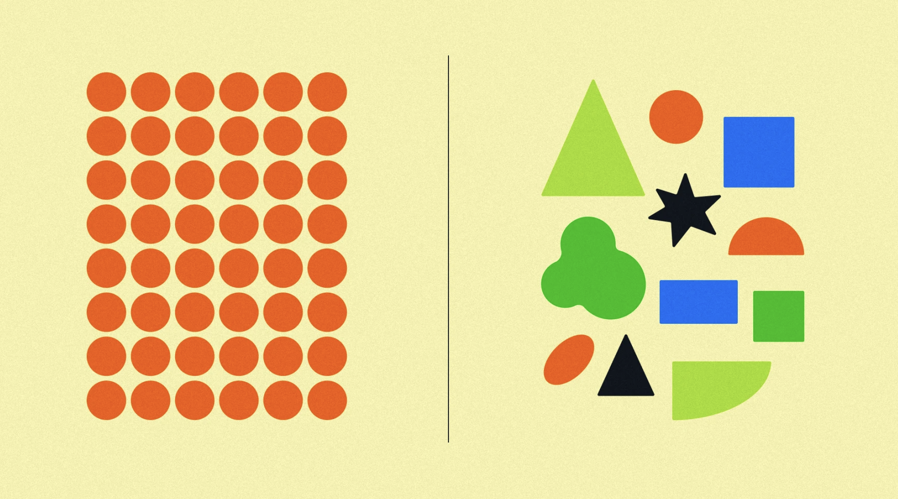

Michael Chungyoun
I am a PhD student in the Jeffrey Gray Lab at Johns Hopkins University. My research focuses on developing protein AI models and curating protein data for therapeutic antibody design. I am broadly interested in expanding and improving therapeutic options for patients.
News

AWS x Gray Lab developability database
Apr 2026

🧬 Open-access therapeutic antibody data release 🧪
Feb 2026
208
5
16,823 impressions

New educational material for AI 🤖 and protein design 🧬
Feb 2026
374
9
26,597 impressions

Recent advances in AI-assisted antibody design
Feb 2026
205
17
12,682 impressions

Fitness Landscape for Antibodies 2 Benchmark
Jan 2026
390
21
20,865 impressions

A data bias in AI models for antibody design 🦠
Sep 2025
132
6
11,054 impressions

Publicly available antibody developability data
Aug 2025
176
8
15,220 impressions

🧬 All-atom AI models for biomolecular discovery
Aug 2025
254
2
15,268 impressions